UI 使用指导教程
1 前言
Tangram库不仅仅提供了一系列函数或者方法来提高前端脚本的编程效率、简化交互式应用程序的编写。同时她还具有一个更吸引人的方面：UI组件。这使得我们为编写用户体验增强而创建的一系列脚本编程、界面设计大为简化。我们可以很轻松的根据Tangram中的UI组件直接替换现有的用户体验模式。
2 关于UI
Tangram主要分为Base和Component两块；其中Component包含了UI组件和FX动画特效。UI中每一个组件都被描述为一个类。命名格式为首字母大写：T.ui.Button。
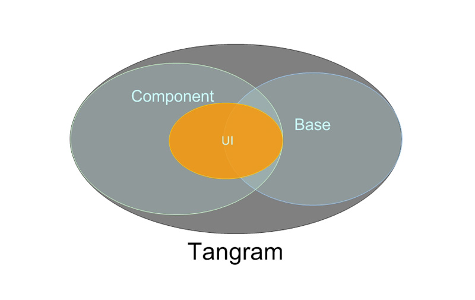
2.1 继承关系
每一个UI组件都继承了T.ui.Base和T.lang.Class这两个类（T等于baidu）。
2.2 OO风格编码
UI组件的实现代码为OO风格，如创建一个Button对象则代码类似 var btn = new T.ui.Button( options );其中options 为传入的参数对象。btn为返回的实例。拥有Button组件的一系列属性、方法、事件。这是一种通用的格式，每个UI组件都可能使用这样的方法来创建得到实例
3 设计一个页应用
上文中讲述了用Tangram中的UI组件可以很轻松的替换现有的用户体验模式。接下来我们以百度的图片搜索页面为例。分析其中的翻页效果，然后设计其修改方案。
3.1 分析功能
首先打开图片搜索页面地址，可以看到如图。
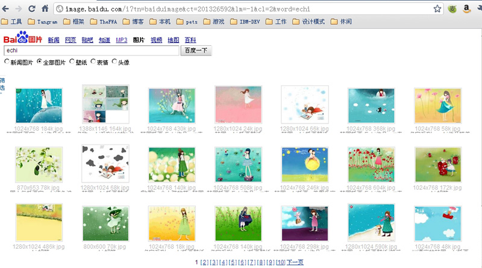
重点关注页面底部的翻页功能，尝试翻到下页。
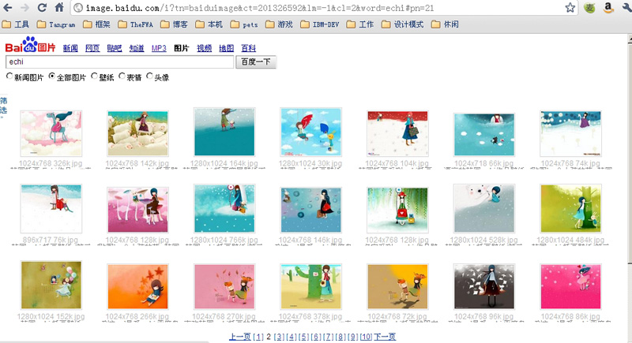
可以看到URL有了变化，搜索结果的内容也变动了。
最后分析下这个图片搜索页面的中的翻页功能。
- 翻页后的页面变化：翻页动作时，页面是无刷的，动态写入/展现内容。
- 第一次发送搜索请求后的URL http://image.baidu.com/i?tn=baiduimage&ct=201326592&lm=-1&cl=2&word=echi
- 翻页后的URL http://image.baidu.com/i?tn=baiduimage&ct=201326592&lm=-1&cl=2&word=echi#pn=21
- 第3页的URL http://image.baidu.com/i?tn=baiduimage&ct=201326592&lm=-1&cl=2&word=echi#pn=42
可以看到，整个URL只有hash部分发生了变化。由此，我们可以推断，在第一次发送搜索请求后载入的数据不仅只有一页，当翻页时，只是将hash对应的部分显示出来。
3.2 设计修改方案
我们打开页面tangram.baidu.com/tangram-component/T_ui_Pager.html，可以看到在UI中也有页面的翻页组件，与本例图片搜索页面的效果相似。但我们要对本例的翻页效果进行修改，增强用户体验。而不是沿用原有的交互模式，我们打开某看图软件
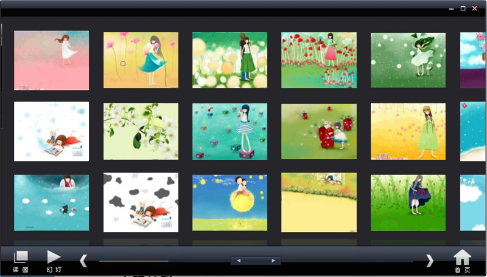
注意这个软件中拖动底部的滚动条上的华滑块，可以切换显示图片的内容。
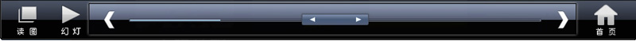
看到上述效果后，使用Tangram是否可以在WEB页面上实现该看图软件的图片显示效果呢？
答案是肯定的。
3.3 功能需求分析
我们将主要分析如何使用滑块替代现有的翻页效果，对于其他的细节将略过。大概的需求如下：
- 输入一个关键词获得数据列表结果
- 将数据分页
- 使用一个滑块来替代翻页效
3.4 功能规划
3.4.1 查找合适的UI组件
打开tangram.baidu.com/tangram-component/ 我们查找到了一个silder组件。该组件可以支持显示一个滑块，并且支持onslide（当开始脱拽滑块）、onslidestop（当拖曳滑块结束）、onslideclick（当单击滑块进度条）等事件。
UI组件我们使用silder即可，切换页面的效果我们将要用到Component中的Fx动画，以及一些Base中的方法函数。列出本文示例代码中可能会使用到的方法函数：
- baidu.ajax.request —— Ajax获取数据
- baidu.dom.innerHTML —— 将内容写入HTML
- baidu.fx.moveTo —— 移动一个元素的位置
- baidu.ui.Silder —— UI滑块组件
UI组件文档示例可以参
简单滑块应用，
复杂滑块应用。
3.4.2 页面设计
图片将被放置在“图片容器面板”中，我们忽略“图片容器面板”内的具体图片数据，下图简单的示意了滑块滚动时，图片容器面板的切换：
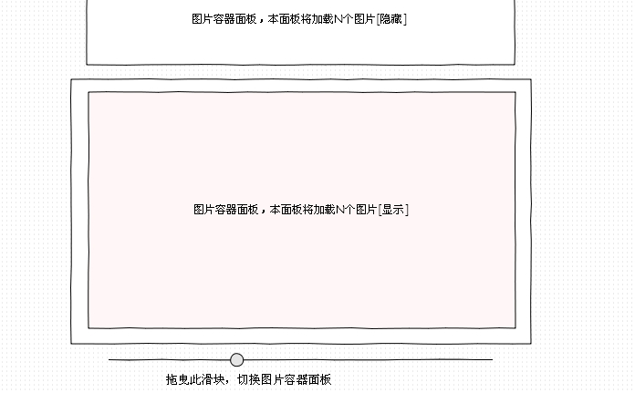
详细设计如图：
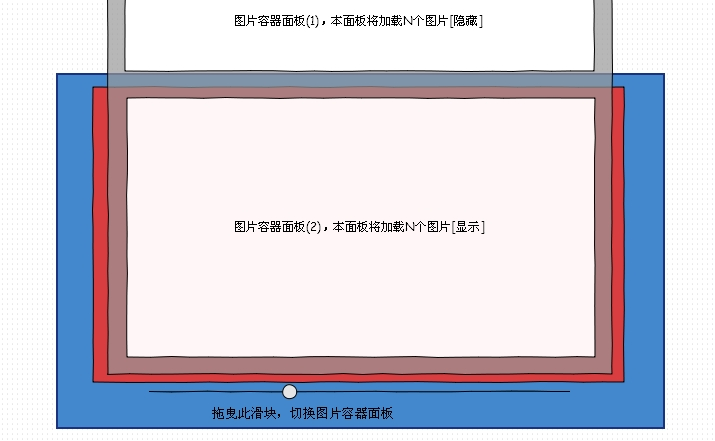
3.4.3 业务逻辑
- 根据返回的数据，图片序列内容被切割为若干个“图片容器面板”。
- 页面设计详图中，蓝色区域为HTML内容区域。红色区域与滑块区域平级，同时，红色区域设置overflow:hidden，将不显示超过本容器的内容。灰色半透明区域在红色区域内漂浮，内部子元素列表为“图片容器面板”，图片容器面板的高度为红色区域。
- 将“图片容器面板”的数量作为滑块可以移动的格数，移动滑块的时候，设置灰色半透明区域的top为相应的值。
- 首先设置滑块的总宽度，然后获得每次滑块移动结束后的当前位置数值，最后根据总宽度的值，与当前位置的值的关系调整灰色半透明区域的top，完成使用UI组件替代原有的功能效果的过程——拖曳滑块显示某页的内容。
4 代码实施
至此我们已经有了页面的设计图，以及特效应用的业务逻辑，接下去我们先准备好HTML页面、含有Silder及其他相关函数方法的Tangram框架js、Silder组件相关的图片、CSS。
然后就是结合HTML页面，利用用Silder组建编写实际的业务逻辑代码了。
4.1 准备资源
4.1.1 HTML页面：
HTML页面DOM结构如下
- BODY
- div .container
- div .Silder
- div #SilderRender
- div #info
|
BODY
|
4.1.2 CSS资源
打开tangram.baidu.com/resource/demo/component/slider.html，获取HTML代码中HEAD部分的STYLE标签的内容。
4.1.3 样式图片资源
根据tangram.baidu.com/resource/demo/component/slider.html页面中的Silder效果，将CSS中指向的图片资源存回本地
4.1.4 Tangram框架脚本文件
- 打开CodeSearch页，手工勾选实际需要的函数方法，然后导出。
- 打开根据功能规划中涉及的相关方法函数已经在CodeSearch页中选好了模块的链接，然后导出。
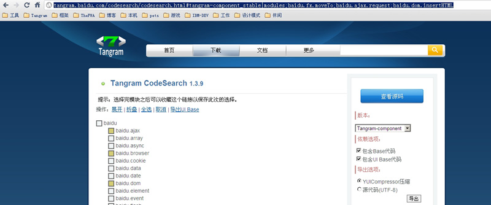
4.1.5 资源总览
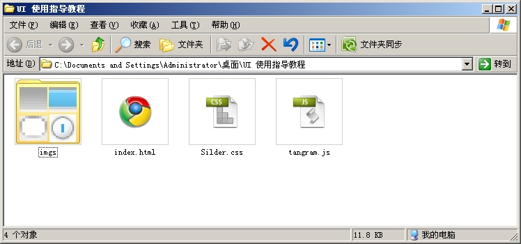
4.2 实际编码
4.2.1 HTML页
index.html的页面布局代码， #Panel 内的 .imgs 为模拟的图片分页展示数据的面板。可以为多个。其中.Silder的红色背景在实际页面中应是不存在的，此处为了与效果图一致没有注释掉。
注意： .imgs 必须与 #Parent 的高相同。
| index.html |
<!DOCTYPE html>
<html>
<head>
<meta http-equiv="Content-Type" content="text/html; charset=utf-8" />
<title>UI使用教程</title>
<script type="text/javascript" src="tangram.js" charset="utf-8"></script>
<link type='text/css' rel='stylesheet' href='Silder.css'/>
<style type="text/css">
body{
background:#333;
font-size:14px;color:#FFF;
}
.container{
/* 中间内容盒子 */
width:800px;height:400px;background:#D00;
position:absolute;
margin:-200px 0px 0px -400px;
left:50%;top:50%;
overflow:hidden;
}
.silder{
/* 滑条容器 */
width:800px;height:30px; background:#D00;
position:absolute;
margin:210px 0px 0px -400px;
left:50%;top:50%;
}
.panel{
/* 图片容器面板的父容器 */
width:800px;height:auto;min-height:400px;background:#CCC;
position:absolute;
top:0px;left:0px;
}
.panel .imgs{
/* 图片容器面板 */
width:100%;height:400px;position:relative;
}
#info{
width:100%;height;20px;line-height:20px;text-align:center;position:absolute;left:0px;bottom:-20px;
}
.bgc00{background:#c00}
.bg0c0{background:#0c0}
.bg00c{background:#00c}
.bgcc0{background:#cc0}
.bg0cc{background:#0cc}
</style>
</head>
<body>
<div class="container" id="Parent">
<div class="panel" id="Panel">
<div class="imgs bgc00">1</div>
<div class="imgs bg0c0">2</div>
<div class="imgs bg00c">3</div>
<div class="imgs bgcc0">4</div>
<div class="imgs bg0cc">4</div>
</div>
</div>
<div class="silder">
<div id="SilderRender"></div>
<div id="info">info</div>
</div>
</body>
</html>
|
|
4.2.2 Silser组件样式
此文件内定义了Silser组件所需要的样式。
| Silder.css |
/*baidu.ui.Slider*/
.tangram-slider {
background : url(imgs/tangram-slider-bg.gif) repeat-x 0px center;
}
.tangram-slider-thumb {
width : 22px;
height : 23px;
z-index : 3000;
}
.tangram-progressbar-bar {
height : 23px;
}
/* 自定义皮肤 */
.tangram-decorator-box-main {
position : relative;
width : 445px;
height : 23px;
}
.tangram-decorator-box-lt {
position : absolute;
z-index : 2;
width : 5px;
height : 23px;
background : url(imgs/tangram-slider-side.gif) no-repeat 0px center;
}
.tangram-decorator-box-rt {
position : absolute;
top : 0px;
right: 0px!important;
right : -1px;/*ie下需要设成-1*/
width : 5px;
height : 23px;
background : url(imgs/tangram-slider-side.gif) no-repeat -5px center;
}
/* 重定义 */
.tangram-slider {width : 100%;height : 23px;}
.tangram-slider-thumb{
filter : progid:DXImageTransform.Microsoft.AlphaImageLoader(enabled=true, sizingMethod=scale, src="imgs/tangram-slider-thumb-blue.png");
background:url(imgs/tangram-slider-thumb-blue.png) no-repeat!important;
background:none;
}
.tangram-progressbar-bar{
background:url(imgs/tangram-slider-fg-blue.gif) repeat-x 0 center;
}
|
4.2.3 Silder组件应用业务逻辑
代码应加在body标签结束之前，实际效果图中 .silder 处的CSS背景颜色应被注释掉。
此段代码定义了 Silder 组件的进度条被单击时，或者滑块被拖曳结束时，执行一个更新panel的函数，传入一个参数，此参数为进度条的当前进度（0~100）。
| <script> |
<script type="text/javascript">
var slider = new T.ui.Slider({
/* 定义皮肤 */
skin: "tangram-decorator",
decorator: [
{
type: "box",
tpl: {
box: "<div #{class}></div><div #{class} id='#{innerWrapId}'></div><div #{class}></div>"
}
}
],
/* 当单击进度条时 */
onslideclick: function(e){
this.update();
updatePanel(this.value);
},
/* 当拖曳滑块结束时 */
onslidestop: function(e){
updatePanel(this.value);
}
});
/* 使用动画更新Panel以及Info */
function updatePanel(v){
var y_pro = ( T.g('Panel').clientHeight - T.g('Parent').clientHeight ) / 100 ;
var m_y = -(v*y_pro);
T.fx.moveTo('Panel',[0,m_y])
T.g('info').innerHTML = parseInt(v)+'/100'
}
slider.render("SilderRender");
</script>
|
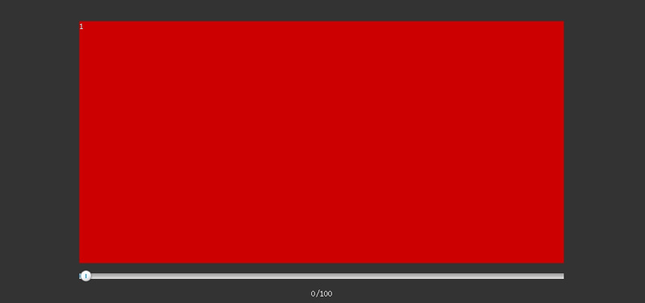
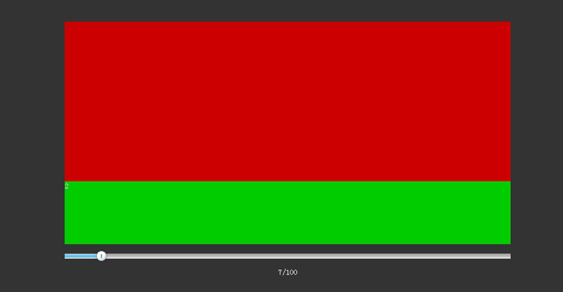
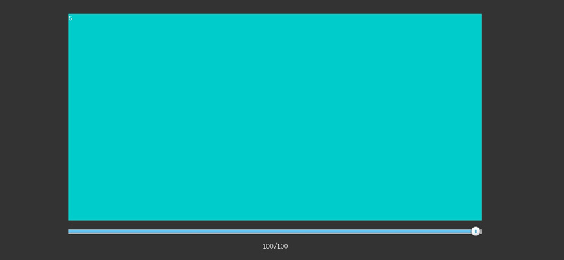 |
5 结语
至此，虽然我们没有完全完成图片搜索页的完全效果，但是本文的目标已经达到——使用一个UI组件完成对翻页功能的改造。
效果内的div.imgs元素可以视作一个分页，如果要完善该效果，应该包括，读取数据，设置分页、还有对Silder的改造，以页数为单位对页面进行滑动，而不是百分比。
在此例中，主要使用了Silder与Fx相互配合，实际上在Tangram中还有许多的UI，这些UI同样使用简单。如果熟悉了tangram.baidu.com中UI的相关文档，我们可以很容易的通过现有的UI组件去制作一个非常具有交互性的页面应用。
{include ../footer.inc}